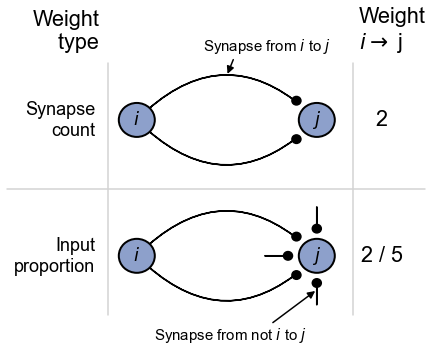
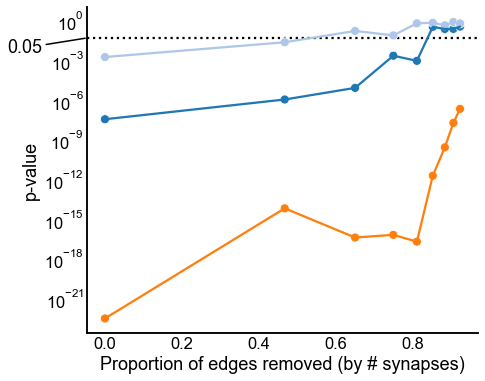
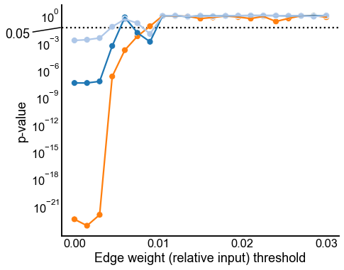
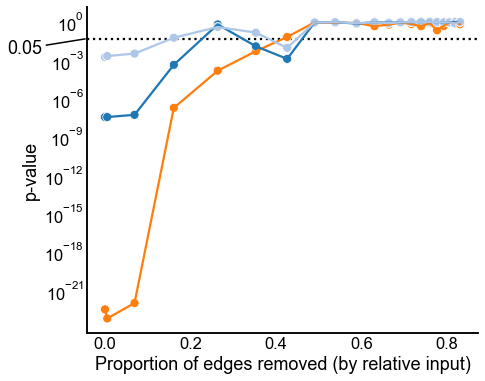
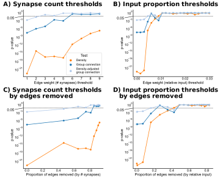

Contents
import datetime
import time
import matplotlib.pyplot as plt
import numpy as np
import pandas as pd
import seaborn as sns
from pkg.data import load_maggot_graph, select_nice_nodes
from pkg.io import FIG_PATH
from pkg.io import glue as default_glue
from pkg.io import savefig
from pkg.plot import SmartSVG, set_theme
from pkg.stats import erdos_renyi_test, stochastic_block_test
from svgutils.compose import Figure, Panel, Text
from tqdm import tqdm
DISPLAY_FIGS = True
FILENAME = "thresholding_tests"
FIG_PATH = FIG_PATH / FILENAME
def glue(name, var, **kwargs):
default_glue(name, var, FILENAME, **kwargs)
def gluefig(name, fig, **kwargs):
savefig(name, foldername=FILENAME, **kwargs)
glue(name, fig, figure=True)
if not DISPLAY_FIGS:
plt.close()
t0 = time.time()
set_theme()
mg = load_maggot_graph()
mg = select_nice_nodes(mg)
left_mg, right_mg = mg.bisect(lcc=True)
left_nodes = left_mg.nodes
right_nodes = right_mg.nodes
left_adj = left_mg.sum.adj
right_adj = right_mg.sum.adj
GROUP_KEY = "simple_group"
left_labels = left_nodes[GROUP_KEY].values
right_labels = right_nodes[GROUP_KEY].values
d_key = "Density"
gc_key = "Group connection"
dagc_key = "Density-adjusted\ngroup connection"
def binarize(A, threshold=None):
# threshold is the smallest that is kept
B = A.copy()
if threshold is not None:
B[B < threshold] = 0
return B
rows = []
thresholds = np.arange(1, 10)
for threshold in tqdm(thresholds):
left_adj_thresh = binarize(left_adj, threshold=threshold)
right_adj_thresh = binarize(right_adj, threshold=threshold)
p_edges_removed = 1 - (
np.count_nonzero(left_adj_thresh) + np.count_nonzero(right_adj_thresh)
) / (np.count_nonzero(left_adj) + np.count_nonzero(right_adj))
stat, pvalue, misc = erdos_renyi_test(left_adj_thresh, right_adj_thresh)
row = {
"threshold": threshold,
"stat": stat,
"pvalue": pvalue,
"method": d_key,
"p_edges_removed": p_edges_removed,
}
rows.append(row)
for adjusted in [False, True]:
if adjusted:
method = dagc_key
else:
method = gc_key
stat, pvalue, misc = stochastic_block_test(
left_adj_thresh,
right_adj_thresh,
left_labels,
right_labels,
density_adjustment=adjusted,
)
row = {
"threshold": threshold,
"adjusted": adjusted,
"stat": stat,
"pvalue": pvalue,
"method": method,
"p_edges_removed": p_edges_removed,
}
rows.append(row)
integer_results = pd.DataFrame(rows)
100%|████████████████████████████████████████████████████████████████████████████████████████████████████████████████████████████| 9/9 [00:21<00:00, 2.38s/it]
def add_alpha_line(ax):
ax.axhline(0.05, color="black", linestyle=":", zorder=-1)
ax.annotate(
r"0.05",
(ax.get_xlim()[0], 0.05),
xytext=(-45, -15),
textcoords="offset points",
arrowprops=dict(arrowstyle="-", color="black"),
clip_on=False,
ha="right",
)
colors = sns.color_palette("tab20")
palette = dict(zip([gc_key, dagc_key, d_key], colors))
fig, ax = plt.subplots(1, 1, figsize=(7, 6))
sns.scatterplot(
data=integer_results,
x="threshold",
y="pvalue",
hue="method",
palette=palette,
ax=ax,
)
sns.lineplot(
data=integer_results,
x="threshold",
y="pvalue",
hue="method",
palette=palette,
ax=ax,
legend=False,
)
ax.set(yscale="log", ylabel="p-value", xlabel="Edge weight (# synapses) threshold")
sns.move_legend(ax, "lower right", title="Test", frameon=True, fontsize="small")
ax.set(xticks=thresholds)
add_alpha_line(ax)
gluefig("integer_threshold_pvalues", fig)

fig, ax = plt.subplots(1, 1, figsize=(7, 6))
sns.scatterplot(
data=integer_results,
x="p_edges_removed",
y="pvalue",
hue="method",
palette=palette,
ax=ax,
legend=False,
)
sns.lineplot(
data=integer_results,
x="p_edges_removed",
y="pvalue",
hue="method",
palette=palette,
ax=ax,
legend=False,
)
ax.set(
yscale="log", ylabel="p-value", xlabel="Proportion of edges removed (by # synapses)"
)
add_alpha_line(ax)
gluefig("integer_threshold_pvalues_p_removed", fig)

left_input = (left_nodes["axon_input"] + left_nodes["dendrite_input"]).values
left_input[left_input == 0] = 1
left_adj_input_norm = left_adj / left_input[None, :]
right_input = (right_nodes["axon_input"] + right_nodes["dendrite_input"]).values
right_input[right_input == 0] = 1
right_adj_input_norm = right_adj / right_input[None, :]
rows = []
thresholds = np.linspace(0, 0.03, 21)
for threshold in tqdm(thresholds):
left_adj_thresh = binarize(left_adj_input_norm, threshold=threshold)
right_adj_thresh = binarize(right_adj_input_norm, threshold=threshold)
p_edges_removed = 1 - (
np.count_nonzero(left_adj_thresh) + np.count_nonzero(right_adj_thresh)
) / (np.count_nonzero(left_adj) + np.count_nonzero(right_adj))
stat, pvalue, misc = erdos_renyi_test(left_adj_thresh, right_adj_thresh)
row = {
"threshold": threshold,
"stat": stat,
"pvalue": pvalue,
"method": d_key,
"p_edges_removed": p_edges_removed,
}
rows.append(row)
for adjusted in [False, True]:
if adjusted:
method = dagc_key
else:
method = gc_key
stat, pvalue, misc = stochastic_block_test(
left_adj_thresh,
right_adj_thresh,
left_labels,
right_labels,
density_adjustment=adjusted,
)
row = {
"threshold": threshold,
"adjusted": adjusted,
"stat": stat,
"pvalue": pvalue,
"method": method,
"p_edges_removed": p_edges_removed,
}
rows.append(row)
input_results = pd.DataFrame(rows)
input_results
100%|██████████████████████████████████████████████████████████████████████████████████████████████████████████████████████████| 21/21 [01:15<00:00, 3.57s/it]
| threshold | stat | pvalue | method | p_edges_removed | adjusted | |
|---|---|---|---|---|---|---|
| 0 | 0.0000 | 3.082387e-23 | 3.082387e-23 | Density | 0.000000 | NaN |
| 1 | 0.0000 | 1.258385e-10 | 3.561229e-08 | Group connection | 0.000000 | False |
| 2 | 0.0000 | 6.344169e-06 | 1.793795e-03 | Density-adjusted\ngroup connection | 0.000000 | True |
| 3 | 0.0015 | 5.954349e-24 | 5.954349e-24 | Density | 0.005350 | NaN |
| 4 | 0.0015 | 1.258385e-10 | 3.561229e-08 | Group connection | 0.005350 | False |
| ... | ... | ... | ... | ... | ... | ... |
| 58 | 0.0285 | 1.292440e-02 | 9.248839e-01 | Group connection | 0.818113 | False |
| 59 | 0.0285 | 7.358936e-03 | 7.700385e-01 | Density-adjusted\ngroup connection | 0.818113 | True |
| 60 | 0.0300 | 6.647336e-01 | 6.647336e-01 | Density | 0.830161 | NaN |
| 61 | 0.0300 | 3.900540e-02 | 9.996055e-01 | Group connection | 0.830161 | False |
| 62 | 0.0300 | 3.296360e-02 | 9.986441e-01 | Density-adjusted\ngroup connection | 0.830161 | True |
63 rows × 6 columns
fig, ax = plt.subplots(1, 1, figsize=(7, 6))
sns.scatterplot(
data=input_results,
x="threshold",
y="pvalue",
hue="method",
palette=palette,
ax=ax,
legend=False,
)
sns.lineplot(
data=input_results,
x="threshold",
y="pvalue",
hue="method",
palette=palette,
ax=ax,
legend=False,
)
ax.set(yscale="log", ylabel="p-value", xlabel="Edge weight (relative input) threshold")
ax.set(xticks=thresholds, yticks=np.geomspace(1, 1e-21, 8))
ax.xaxis.set_major_locator(plt.MaxNLocator(4))
add_alpha_line(ax)
gluefig("input_threshold_pvalues", fig)

fig, ax = plt.subplots(1, 1, figsize=(7, 6))
sns.scatterplot(
data=input_results,
x="p_edges_removed",
y="pvalue",
hue="method",
palette=palette,
ax=ax,
legend=False,
)
sns.lineplot(
data=input_results,
x="p_edges_removed",
y="pvalue",
hue="method",
palette=palette,
ax=ax,
legend=False,
)
ax.set(
yscale="log",
ylabel="p-value",
xlabel="Proportion of edges removed (by relative input)",
yticks=np.geomspace(1, 1e-21, 8),
)
add_alpha_line(ax)
gluefig("input_threshold_pvalues_p_removed", fig)

fontsize = 10
int_thresh = SmartSVG(FIG_PATH / "integer_threshold_pvalues.svg")
int_thresh.set_width(200)
int_thresh.move(10, 15)
int_thresh_panel = Panel(
int_thresh, Text("A) Synapse count thresholds", 5, 10, size=fontsize, weight="bold")
)
input_thresh = SmartSVG(FIG_PATH / "input_threshold_pvalues.svg")
input_thresh.set_width(200)
input_thresh.move(10, 15)
input_thresh_panel = Panel(
input_thresh,
Text("B) Input proportion thresholds", 5, 10, size=fontsize, weight="bold"),
)
input_thresh_panel.move(int_thresh.width * 0.9, 0)
int_p_removed = SmartSVG(FIG_PATH / "integer_threshold_pvalues_p_removed.svg")
int_p_removed.set_width(200)
int_p_removed.move(10, 25)
int_p_removed_panel = Panel(
int_p_removed,
Text("C) Synapse count thresholds", 5, 10, size=fontsize, weight="bold"),
Text("by edges removed", 15, 20, size=fontsize, weight="bold"),
)
int_p_removed_panel.move(0, int_thresh.height * 0.9)
input_p_removed = SmartSVG(FIG_PATH / "input_threshold_pvalues_p_removed.svg")
input_p_removed.set_width(200)
input_p_removed.move(10, 25)
input_p_removed_panel = Panel(
input_p_removed,
Text("D) Input proportion thresholds", 5, 10, size=fontsize, weight="bold"),
Text("by edges removed", 15, 20, size=fontsize, weight="bold"),
)
input_p_removed_panel.move(int_thresh.width * 0.9, int_thresh.height * 0.9)
fig = Figure(
int_thresh.width * 2 * 0.9,
int_thresh.height * 2 * 0.95,
int_thresh_panel,
input_thresh_panel,
int_p_removed_panel,
input_p_removed_panel,
)
fig.save(FIG_PATH / "thresholding_composite.svg")
fig

elapsed = time.time() - t0
delta = datetime.timedelta(seconds=elapsed)
print(f"Script took {delta}")
print(f"Completed at {datetime.datetime.now()}")
Script took 0:02:20.124256
Completed at 2022-03-21 10:04:38.915069